KM05 — LCM aur HCF, ekdum aasaan tarike se?
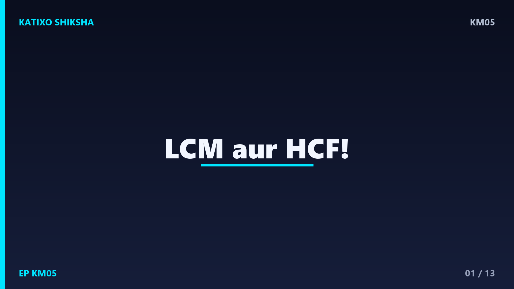
Slide 1Namaste बच्चों! Katixo KhojLab me तुम्हारा फिर से स्वागत है! आज हम सीखेंगे दो मज़ेदार शब्द: LCM aur HCF. डरने की कोई बात नहीं, ये बहुत easy हैं! सोचो, दो दोस्त अलग-अलग रफ्तार से दौड़ते हैं, या दो घंटियाँ अलग-अलग समय पर बजती हैं. कब वो एक साथ मिलेंगे? यही जादू LCM aur HCF हल करते हैं! आज हम पूरी तरह समझेंगे, step by step. तो तैयार हो जाओ, चलो शुरू करते हैं!
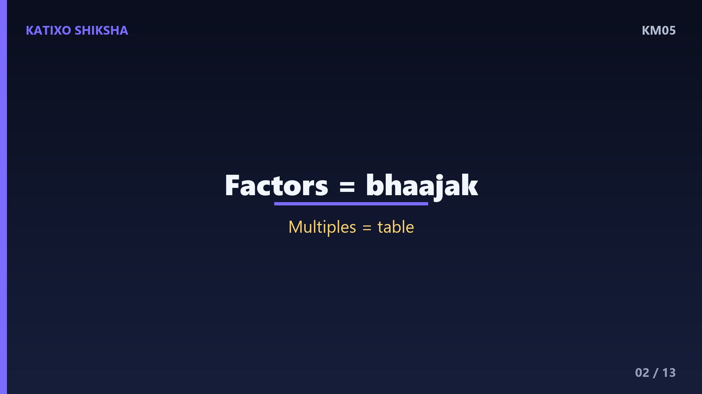
Slide 2सबसे पहले समझो factors, यानी भाजक. किसी number ke factors वो numbers होते हैं जो उसे पूरा-पूरा बाँट देते हैं, बिना कुछ बचे. जैसे 12 ke factors hain: 1, 2, 3, 4, 6 aur 12. देखो, 12 ko 3 se बाँटो तो 4 आता है, कुछ नहीं बचता! इसी तरह multiples वो होते हैं जो table में आते हैं. जैसे 4 ke multiples: 4, 8, 12, 16, 20. बच्चों, ये दो शब्द याद रखो, आगे बहुत काम आएँगे!
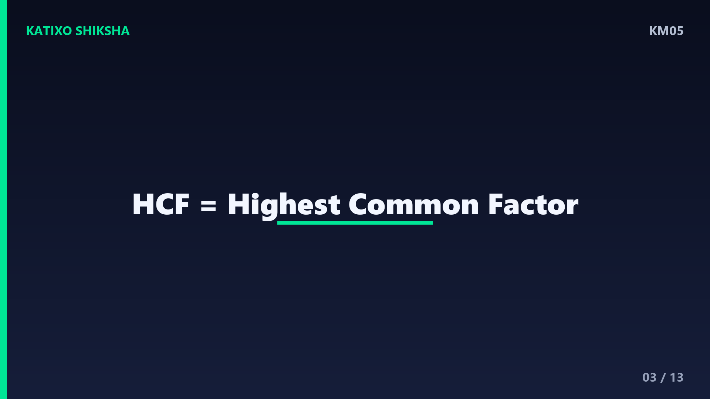
Slide 3अब बात करते हैं HCF की. HCF ka matlab hai Highest Common Factor, यानी सबसे बड़ा सांझा भाजक. सोचो तुम्हारे पास दो numbers हैं. दोनों के factors निकालो, फिर देखो कौन सा सबसे बड़ा number दोनों में common है. वही HCF है! इसे हम महातम समापवर्तक भी कहते हैं. HCF हमेशा दोनों numbers से छोटा या बराबर होता है. याद रखो, Highest matlab सबसे बड़ा, Common matlab दोनों में मिलने वाला!
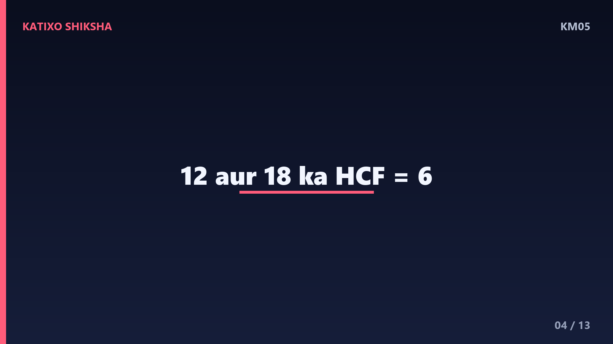
Slide 4चलो HCF का एक worked example करते हैं. हमें 12 aur 18 ka HCF निकालना है. पहले 12 ke factors: 1, 2, 3, 4, 6, 12. अब 18 ke factors: 1, 2, 3, 6, 9, 18. अब देखो कौन से दोनों में common हैं: 1, 2, 3 aur 6. इनमें सबसे बड़ा है 6! तो 12 aur 18 ka HCF hai 6. बहुत आसान था ना बच्चों? बस factors मिलाओ और सबसे बड़ा common चुन लो!
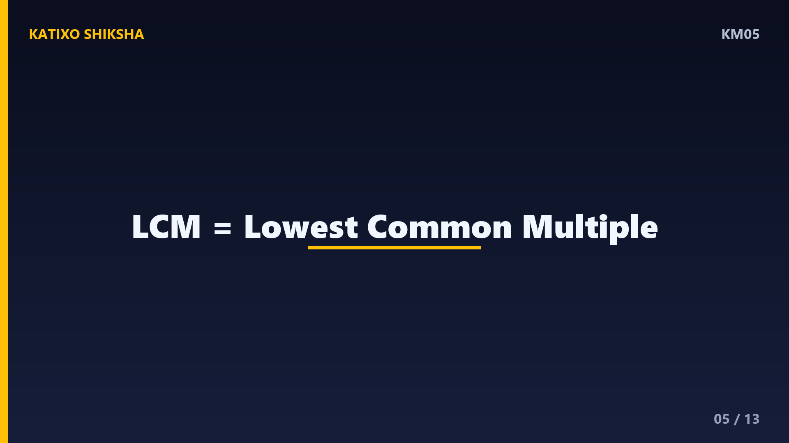
Slide 5अब समझते हैं LCM. LCM ka matlab hai Lowest Common Multiple, यानी सबसे छोटा सांझा गुणज. इसे लघुतम समापवर्त्य भी कहते हैं. दोनों numbers ke multiples यानी table लिखो, फिर देखो कौन सा सबसे छोटा number दोनों की table में आता है. वही LCM है! LCM हमेशा दोनों numbers से बड़ा या बराबर होता है. याद रखो, Lowest matlab सबसे छोटा, Multiple matlab table वाला number!
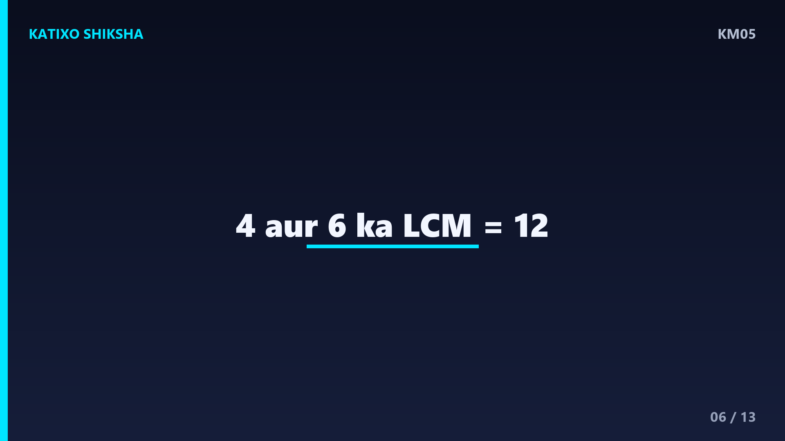
Slide 6चलो LCM का worked example करते हैं. हमें 4 aur 6 ka LCM निकालना है. पहले 4 ki table: 4, 8, 12, 16, 20, 24. अब 6 ki table: 6, 12, 18, 24, 30. अब देखो दोनों में common कौन से हैं: 12 aur 24. इनमें सबसे छोटा है 12! तो 4 aur 6 ka LCM hai 12. देखा बच्चों, LCM में हम table मिलाते हैं और सबसे छोटा common चुनते हैं!
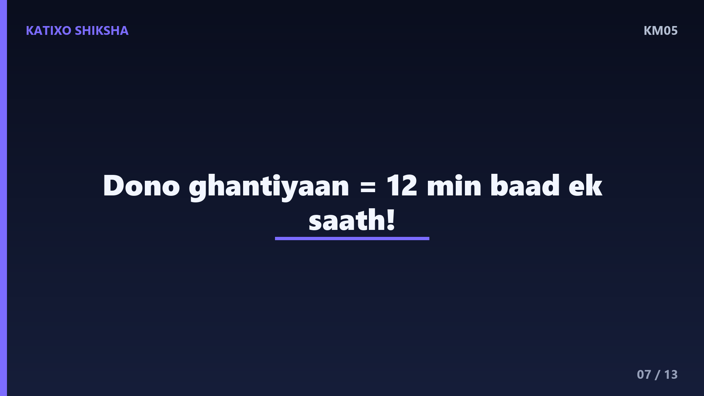
Slide 7अब एक मज़ेदार रोज़ की कहानी. सोचो एक घंटी हर 4 minute me बजती है, दूसरी हर 6 minute me. दोनों एक साथ कब बजेंगी? यह LCM का सवाल है! 4 aur 6 ka LCM hai 12. तो दोनों घंटियाँ 12 minute baad एक साथ बजेंगी! ऐसे ही जब दो दोस्त track पर अलग रफ्तार से दौड़ें, तो LCM बताता है कब वो शुरू वाली जगह पर एक साथ मिलेंगे. मज़ेदार है ना?
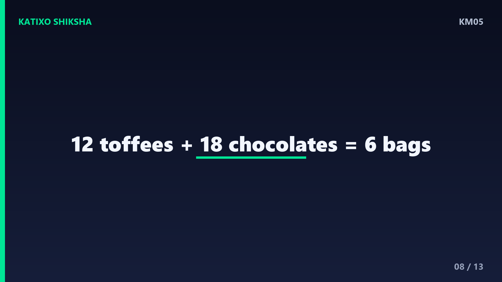
Slide 8अब HCF की रोज़ की कहानी. सोचो तुम्हारे पास 12 toffees aur 18 chocolates हैं. तुम इन्हें बराबर-बराबर बैग में बाँटना चाहते हो, बिना कुछ बचाए. सबसे ज़्यादा कितने बैग बन सकते हैं? यह HCF का सवाल है! 12 aur 18 ka HCF hai 6. तो तुम 6 बैग बना सकते हो, हर बैग me 2 toffees aur 3 chocolates! HCF चीज़ों को बराबर बाँटने में मदद करता है, बच्चों!
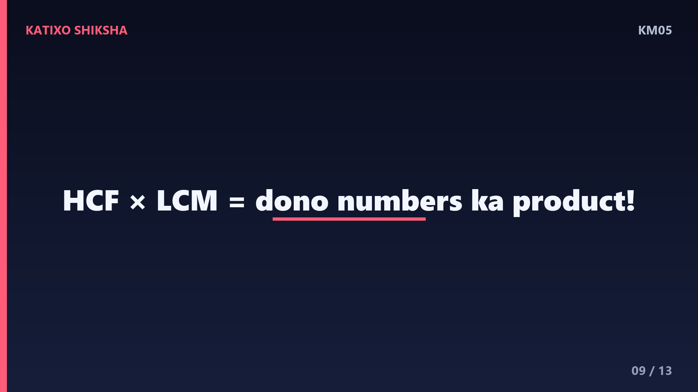
Slide 9एक और बड़ा example करते हैं ताकि पक्का हो जाए. 8 aur 12 ka HCF aur LCM निकालो. 8 ke factors: 1, 2, 4, 8. 12 ke factors: 1, 2, 3, 4, 6, 12. Common factors: 1, 2, 4. सबसे बड़ा 4, तो HCF hai 4! अब table: 8, 16, 24, 32 aur 12, 24, 36. सबसे छोटा common 24, तो LCM hai 24! एक छोटा जादू: HCF गुणा LCM बराबर होता है दोनों numbers ka गुणनफल. देखो, 4 गुणा 24 बराबर 96, aur 8 गुणा 12 भी 96!
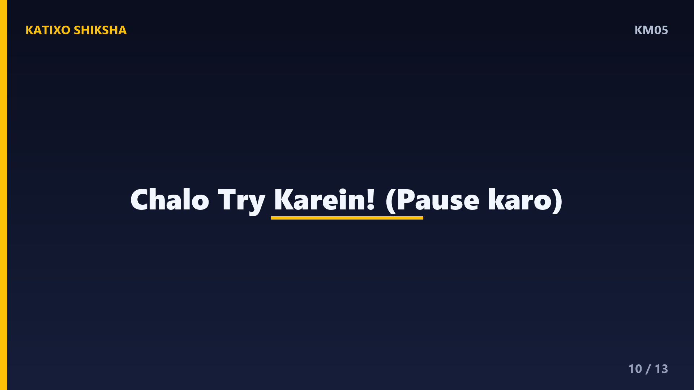
Slide 10अब समय है तुम्हारी बारी! Chalo try karein! तीन सवाल हैं, video रोको aur copy me हल करो. पहला: 6 aur 9 ka HCF kya hai? दूसरा: 3 aur 5 ka LCM kya hai? तीसरा: 10 aur 15 ka HCF kya hai? जल्दबाज़ी मत करना, factors aur tables ध्यान से लिखना. हो गया? शाबाश! अब अगली slide पर answers देखते हैं. खुद से कोशिश करना सबसे ज़रूरी है, बच्चों!
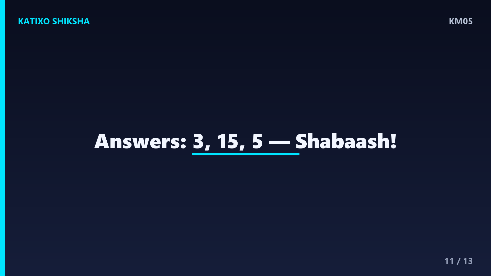
Slide 11चलो answers मिलाते हैं! पहला: 6 ke factors 1, 2, 3, 6 aur 9 ke factors 1, 3, 9. Common me सबसे बड़ा 3, तो HCF hai 3! दूसरा: 3 ki table 3, 6, 9, 12, 15 aur 5 ki table 5, 10, 15. सबसे छोटा common 15, तो LCM hai 15! तीसरा: 10 ke factors 1, 2, 5, 10 aur 15 ke factors 1, 3, 5, 15. Common me सबसे बड़ा 5, तो HCF hai 5! कितने सही हुए?
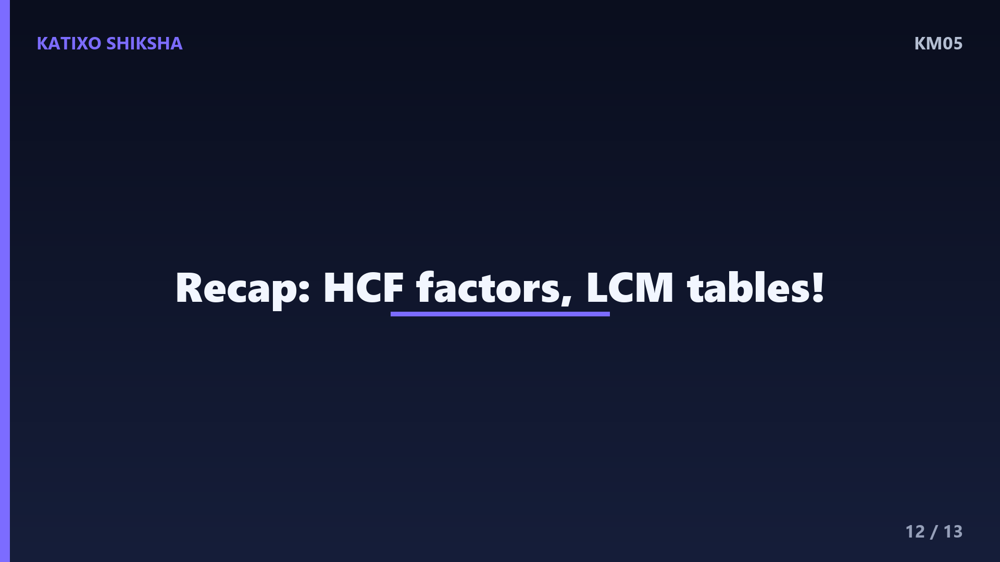
Slide 12चलो अब पूरा recap करते हैं! HCF matlab Highest Common Factor, यानी सबसे बड़ा common भाजक, जो चीज़ें बराबर बाँटने में काम आता है. LCM matlab Lowest Common Multiple, यानी सबसे छोटा common गुणज, जो एक साथ मिलने वाले समय में काम आता है. HCF के लिए factors मिलाओ, LCM के लिए tables मिलाओ. बस इतना सा याद रखो aur तुम master बन जाओगे, बच्चों!
Slide 13शाबाश बच्चों! आज तुमने LCM aur HCF दोनों सीख लिए, ekdum aasaan tarike se! रोज़ थोड़ी-थोड़ी practice करते रहना, फिर ये सवाल खेल जैसे लगेंगे. अगर मज़ा आया तो Katixo KhojLab subscribe karo, like करो aur bell दबाओ ताकि हर नया मज़ेदार lesson सबसे पहले तुम तक पहुँचे! अगली बार एक नए topic के साथ मिलेंगे. तब तक सीखते रहो, मुस्कुराते रहो. Shabaash, milte hain agle episode me!